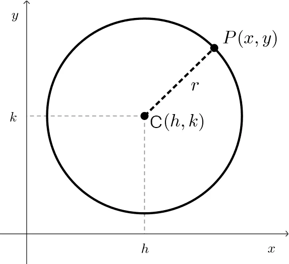
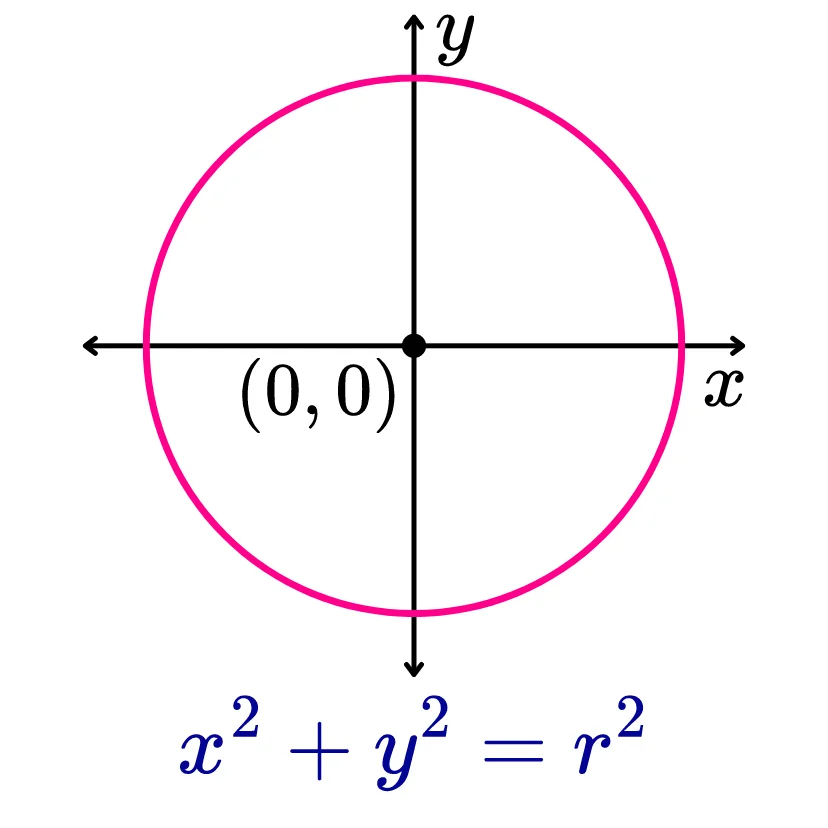
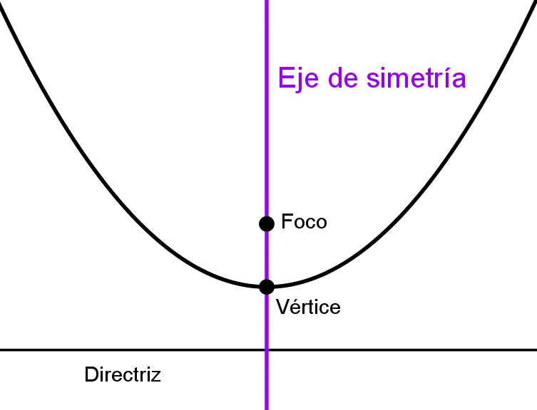

Una circunferencia es una figura geométrica esencial en matemáticas y aparece en múltiples disciplinas, desde la geometría y el cálculo hasta la
física y la ingeniería. Se define como el conjunto de todos los puntos en un plano que equidistan de un punto fijo llamado centro. Esa distancia
constante desde el centro hacia cualquier punto de la circunferencia se conoce como el radio.

Como se grafica
Para graficar una sección cónica, como una circunferencia, necesitas comprender su ecuación y cómo representarla en
un sistema de coordenadas.
1. Identificar la ecuación de la sección cónica: Circunferencia: (𝑥−ℎ)^2+(𝑦−𝑘)^2=𝑟^2
2. Identificar los elementos clave: Centro: Punto central de circunferencias
3. Trazar puntos clave: En una circunferencia, marca el centro y puntos en los extremos del radio.
4. Dibujar la curva: Usa simetría y puntos clave para obtener la forma aproximada de la sección cónica.
En caso de duda, puedes calcular valores de 𝑥 e 𝑦 para más precisión.
5. Graficar digitalmente: Geogebra o Desmos para representaciones dinámicas.
Que es una ecuacion canonica
La ecuación canónica es una forma específica de representar ciertas figuras geométricas, como circunferencias, parábolas, elipses y hipérbolas.
Se utiliza para expresar la ecuación de estas curvas de manera estándar, lo que facilita su análisis y manipulación.
Para una circunferencia con centro en (ℎ,𝑘)y radio 𝑟, la ecuación canónica es: (𝑥−ℎ)2+(𝑦−𝑘)2=𝑟2

Que es una ecuacion general
La ecuación general de una cónica es una forma algebraica que engloba todas las secciones cónicas (circunferencia, parábola, elipse e hipérbola) en
una misma expresión: 𝐴𝑥2+𝐵𝑥𝑦+𝐶𝑦2+𝐷𝑥+𝐸𝑦+𝐹 = 0
Reglas generales
Las reglas de la ecuación general de una cónica permiten identificar su tipo y transformarla en una forma más manejable.
1. obligatoriamente la x,y deben de estar solo no deben tener coeficiente
2. la ecuacion debe de tener como resultados como 0, como dado en la definición anterior.
Parabola
Que es una Parabola en una grafica
Una parábola es una curva geométrica que se obtiene al cortar un cono con un plano paralelo a una de sus generatrices. En términos matemáticos,
es el conjunto de puntos en el plano que equidistan de un punto fijo, llamado foco, y de una línea fija, llamada directriz.

Partes de una Parabola
Su definición se basa en la distancia constante entre un punto fijo, llamado foco, y una línea fija conocida como directriz.
Vértice: Es el punto más importante de la parábola, donde la curva cambia de dirección. Actúa como el punto central de
simetría y define la posición del eje de la parábola.
Eje de simetría: Es la línea vertical que atraviesa el vértice y divide la parábola en dos mitades idénticas.
Este eje juega un papel crucial en la definición de la dirección de la apertura de la curva.
Foco: Punto clave dentro de la parábola, desde donde se reflejan las ondas (como en antenas parabólicas) o se concentra la luz en óptica.
Directriz: Una línea imaginaria paralela al eje de simetría. La parábola se forma como el conjunto de puntos equidistantes entre el foco y la directriz.
Lado recto: Es el segmento que une dos puntos de la parábola y pasa por el foco. Su longitud es proporcional a la distancia entre el foco y la directriz.
Usos de la Parabola
Las parábolas desempeñan un papel fundamental en numerosos campos del conocimiento y la vida cotidiana, extendiéndose desde la matemática pura
hasta áreas aplicadas como la ingeniería, la física y la arquitectura.
En matemáticas: las parábolas aparecen en ecuaciones cuadráticas y tienen aplicaciones en el análisis de
funciones, el cálculo y la geometría analítica. Son esenciales para comprender conceptos como máximos y mínimos en problemas de
optimización y en la representación gráfica de datos.
En física: la trayectoria de los proyectiles sigue una curva parabólica debido a la influencia de la gravedad,
lo que es clave para la balística y el diseño de trayectorias en aeronáutica y astronáutica.
En ingeniería y arquitectura: las estructuras parabólicas permiten una mejor distribución de fuerzas,
lo que hace que sean ideales para el diseño de puentes, arcos y techos resistentes. Ejemplos emblemáticos incluyen construcciones como el
Gateway Arch en San Luis
Actividad
Durante el tercer período, hemos centrado nuestra atención en el estudio y la representación gráfica de circunferencias y parábolas en el plano
cartesiano. A lo largo de este proceso, hemos explorado las ecuaciones fundamentales que definen estas figuras geométricas, analizando cómo sus
parámetros influyen en su posición, tamaño y forma.